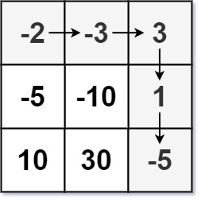

dp这一块我一直觉得是算法里面比较难的一块, 思路千奇百怪. 虽然核心思路都是记录状态, 从前状态推后状态从而得出结果, 然而实际题目里面很多时候会有各种各样的问题, 比如递推关系抽象不出来, 又或者情况复杂导致判断多, 边界处理不当等等. 这几天稍微刷了刷dp, 简单记录.
题目分类来自: 灵茶山艾府-分享丨【题单】动态规划（入门/背包/状态机/划分/区间/状压/数位/树形/数据结构优化）
入门
爬楼梯(前状态加到后状态)
基础: 2466. 统计构造好字符串的方案数
给你整数 zero ，one ，low 和 high ，我们从空字符串开始构造一个字符串，每一步执行下面操作中的一种：
将 '0' 在字符串末尾添加 zero 次。
将 '1' 在字符串末尾添加 one 次。
以上操作可以执行任意次。
如果通过以上过程得到一个 长度 在 low 和 high 之间（包含上下边界）的字符串，那么这个字符串我们称为 好 字符串。
请你返回满足以上要求的 不同 好字符串数目。由于答案可能很大，请将结果对 10^9 + 7 取余 后返回。
1 2 3 4 5 6 7 8 9 10 11 12 示例 1： 输入：low = 3, high = 3, zero = 1, one = 1 输出：8 解释： 一个可能的好字符串是 "011" 。 可以这样构造得到："" -> "0" -> "01" -> "011" 。 从 "000" 到 "111" 之间所有的二进制字符串都是好字符串。 示例 2： 输入：low = 2, high = 3, zero = 1, one = 2 输出：5 解释：好字符串为 "00" ，"11" ，"000" ，"110" 和 "011" 。
爬楼梯问题, 在上一次的基础上爬zero或者one个台阶.
1 2 3 4 5 6 7 8 9 10 11 12 13 class Solution : def countGoodStrings (self, low: int , high: int , zero: int , one: int ) -> int : dp = [0 for i in range (high+1 )] dp[0 ] = 1 lst = [zero, one] ans = 0 for i in range (high+1 ): for num in lst: if i>=num: dp[i] += dp[i-num] % (10 **9 + 7 ) if low<=i<=high: ans += dp[i] % (10 **9 + 7 ) return ans % (10 **9 + 7 )
进阶: 2266. 统计打字方案数
Alice 在给 Bob 用手机打字。数字到字母的 对应 如下图所示。
为了 打出 一个字母，Alice 需要 按 对应字母 i 次，i 是该字母在这个按键上所处的位置。
比方说，为了按出字母 's' ，Alice 需要按 '7' 四次。类似的， Alice 需要按 '5' 两次得到字母 'k' 。
注意，数字 '0' 和 '1' 不映射到任何字母，所以 Alice不 使用它们。
但是，由于传输的错误，Bob 没有收到 Alice 打字的字母信息，反而收到了 按键的字符串信息 。
比方说，Alice 发出的信息为 "bob" ，Bob 将收到字符串 "2266622" 。
给你一个字符串 pressedKeys ，表示 Bob 收到的字符串，请你返回 Alice 总共可能发出多少种文字信息 。
由于答案可能很大，将它对 10^9 + 7 取余 后返回。
1 2 3 4 5 6 7 8 9 10 11 12 13 14 示例 1： 输入：pressedKeys = "22233" 输出：8 解释： Alice 可能发出的文字信息包括： "aaadd", "abdd", "badd", "cdd", "aaae", "abe", "bae" 和 "ce" 。 由于总共有 8 种可能的信息，所以我们返回 8 。 示例 2： 输入：pressedKeys = "222222222222222222222222222222222222" 输出：82876089 解释： 总共有 2082876103 种 Alice 可能发出的文字信息。 由于我们需要将答案对 109 + 7 取余，所以我们返回 2082876103 % (109 + 7) = 82876089 。
9键输入转可能输出. 反向爬楼梯, 读到连续k个输入的时候每次下个输入都可以建立在合法的k-1,k-2,k-3上(如果为79还有k-4).
针对79和其他输入, 我们分three_stack和four_stack, 检测连续输入, 做叠加即可获取长度为n的连续同字符输入. 然后不同group做乘积即可.
当然, 由于同字符连续输入的输出可能数量总相同, 所以可以预处理先算出所有可能数量, 然后直接统计连续字符数去查询结果就行.
1 2 3 4 5 6 7 8 9 10 11 12 13 14 15 16 17 18 19 20 21 22 23 class Solution : def countTexts (self, pressedKeys: str ) -> int : start = 1 three_stack = [0 ,1 ,1 ] four_stack = [0 ,0 ,1 ,1 ] i = 0 n = len (pressedKeys) mod = 10 ** 9 + 7 while i != n-1 : while i < n-1 and pressedKeys[i] != pressedKeys[i+1 ]: i += 1 if pressedKeys[i] in '79' : stack = four_stack.copy() else : stack = three_stack.copy() while i < n-1 and pressedKeys[i] == pressedKeys[i+1 ]: sum_ = sum (stack) % mod stack.pop(0 ) stack.append(sum_) i += 1 start *= stack[-1 ] start %= mod return start
打家劫舍
基础: 198. 打家劫舍
你是一个专业的小偷，计划偷窃沿街的房屋。每间房内都藏有一定的现金，影响你偷窃的唯一制约因素就是相邻的房屋装有相互连通的防盗系统，如果两间相邻的房屋在同一晚上被小偷闯入，系统会自动报警。
给定一个代表每个房屋存放金额的非负整数数组，计算你 不触动警报装置的情况下 ，一夜之内能够偷窃到的最高金额。
1 2 3 4 5 6 7 8 9 10 11 示例 1： 输入：[1,2,3,1] 输出：4 解释：偷窃 1 号房屋 (金额 = 1) ，然后偷窃 3 号房屋 (金额 = 3)。 偷窃到的最高金额 = 1 + 3 = 4 。 示例 2： 输入：[2,7,9,3,1] 输出：12 解释：偷窃 1 号房屋 (金额 = 2), 偷窃 3 号房屋 (金额 = 9)，接着偷窃 5 号房屋 (金额 = 1)。 偷窃到的最高金额 = 2 + 9 + 1 = 12 。
每次偷窃与否基于前两个状态. 即 f(n+1) = max(f(n),f(n-1)+value[n+1]).
1 2 3 4 5 6 7 8 class Solution : def rob (self, nums: List [int ] ) -> int : if len (nums) <= 2 : return max (nums) nums[1 ] = max (nums[0 ],nums[1 ]) for i in range (2 , len (nums)): nums[i] = max (nums[i-1 ], nums[i-2 ]+nums[i]) return nums[-1 ]
进阶: 3186. 施咒的最大总伤害
一个魔法师有许多不同的咒语。
给你一个数组 power ，其中每个元素表示一个咒语的伤害值，可能会有多个咒语有相同的伤害值。
已知魔法师使用伤害值为 power[i] 的咒语时，他们就 不能 使用伤害为 power[i] - 2 ，power[i] - 1 ，power[i] + 1 或者 power[i] + 2 的咒语。
每个咒语最多只能被使用 一次 。
请你返回这个魔法师可以达到的伤害值之和的 最大值 。
1 2 3 4 5 6 7 8 9 10 11 示例 1： 输入：power = [1,1,3,4] 输出：6 解释： 可以使用咒语 0，1，3，伤害值分别为 1，1，4，总伤害值为 6 。 示例 2： 输入：power = [7,1,6,6] 输出：13 解释： 可以使用咒语 1，2，3，伤害值分别为 1，6，6，总伤害值为 13 。
首先最先看到是长度为3的打家劫舍, 初始思路可以直接找到最小值和最大值, 然后遍历一遍过去, 当打家劫舍来处理即可.
1 2 3 4 5 6 7 8 9 10 11 12 13 class Solution : def maximumTotalDamage (self, power: List [int ] ) -> int : min_ = min (power) max_ = max (power) ctr = Counter(power) score = [ctr[min_]*min_, ctr[min_+1 ]*(min_+1 ), ctr[min_+2 ]*(min_+2 )] if max_-min_+1 <= 3 : return max (score) dp = [score[0 ], max (score[0 ],score[1 ]), max (score[:3 ])] for i in range (3 , max_-min_+1 ): dp[0 ], dp[1 ], dp[2 ] = dp[1 ], dp[2 ], max (dp[0 ]+ctr[min_+i]*(min_+i), dp[1 ], dp[2 ]) return dp[-1 ]
非常直观, 但是很可惜这么写会直接TLE. 因为从min到max这中间计算了太多无用状态, 优化解法为调用counter, 排序key, 然后依序读取key来处理(流程优化, 其实也就是将中间数值为0的部分做直接传递而非逐步计算).
1 2 3 4 5 6 7 8 9 10 11 12 13 14 15 16 17 18 class Solution : def maximumTotalDamage (self, power: List [int ] ) -> int : ctr = Counter(power) prev = None dp = [0 ,0 ,0 ] for k in sorted (ctr): if prev is None : prev = k dp[-1 ] = k*ctr[k] else : if k == prev + 1 : dp[0 ], dp[1 ], dp[2 ] = dp[1 ], dp[2 ], max (dp[1 ], dp[2 ], dp[0 ] + k*ctr[k]) elif k == prev + 2 : dp[0 ], dp[1 ], dp[2 ] = dp[2 ], dp[2 ], max (dp[2 ], dp[1 ]+k*ctr[k]) else : dp[0 ], dp[1 ], dp[2 ] = dp[2 ], dp[2 ], dp[2 ] + k*ctr[k] prev = k return dp[-1 ]
最大子数组和
核心部分kadane算法, 即
1 2 3 4 5 curr = 0 ans = 0 for i in nums: curr = max (curr,0 ) + i ans = max (ans, curr)
基础: 53. 最大子数组和
给你一个整数数组 nums ，请你找出一个具有最大和的连续子数组（子数组最少包含一个元素），返回其最大和。
子数组是数组中的一个连续部分。
1 2 3 4 5 6 7 8 9 10 11 12 示例 1： 输入：nums = [-2,1,-3,4,-1,2,1,-5,4] 输出：6 解释：连续子数组 [4,-1,2,1] 的和最大，为 6 。 示例 2： 输入：nums = [1] 输出：1 示例 3： 输入：nums = [5,4,-1,7,8] 输出：23
1 2 3 4 5 6 7 8 class Solution : def maxSubArray (self, nums: List [int ] ) -> int : curr = 0 ans = float ('-inf' ) for i in nums: curr = max (curr+i, i) ans = max (ans, curr) return ans
进阶1: 918. 环形子数组的最大和
给定一个长度为 n 的环形整数数组 nums ，返回 nums 的非空 子数组 的最大可能和 。
环形数组 意味着数组的末端将会与开头相连呈环状。形式上， nums[i] 的下一个元素是 nums[(i + 1) % n] ， nums[i] 的前一个元素是 nums[(i - 1 + n) % n] 。
子数组 最多只能包含固定缓冲区 nums 中的每个元素一次。形式上，对于子数组 nums[i], nums[i + 1], ..., nums[j] ，不存在 i <= k1, k2 <= j 其中 k1 % n == k2 % n 。
1 2 3 4 5 6 7 8 9 10 11 12 13 14 示例 1： 输入：nums = [1,-2,3,-2] 输出：3 解释：从子数组 [3] 得到最大和 3 示例 2： 输入：nums = [5,-3,5] 输出：10 解释：从子数组 [5,5] 得到最大和 5 + 5 = 10 示例 3： 输入：nums = [3,-2,2,-3] 输出：3 解释：从子数组 [3] 和 [3,-2,2] 都可以得到最大和 3
掌握思路就很简单, 两种可能:
找中间部分最大(kadane)
最大部分为尾串+首串; 又由于数组大小总数一定, 即找到中间部分最小的字串, 依旧是kadane.
进阶2: 1191. K 次串联后最大子数组之和
给定一个整数数组 arr 和一个整数 k ，通过重复 k 次来修改数组。
例如，如果 arr = [1, 2] ， k = 3 ，那么修改后的数组将是 [1, 2, 1, 2, 1, 2] 。
返回修改后的数组中的最大的子数组之和。注意，子数组长度可以是 0，在这种情况下它的总和也是 0。
由于 结果可能会很大，需要返回的 10^9 + 7 的 模 。
1 2 3 4 5 6 7 8 9 10 11 示例 1： 输入：arr = [1,2], k = 3 输出：9 示例 2： 输入：arr = [1,-2,1], k = 5 输出：2 示例 3： 输入：arr = [-1,-2], k = 7 输出：0
情况拆分, k == 1直接kadane即可; 一旦k大于1, 那么如果arr总和大于0, 那么我们一定会尽可能多读, 相当于kadane(arr+arr)+(k-2) * sum, 反之如果arr总和小于0, 那么我们直接对两个arr做kadane即可, 相当于kadane(arr+arr).
1 2 3 4 5 6 7 8 9 10 11 12 class Solution : def kConcatenationMaxSum (self, arr: List [int ], k: int ) -> int : sum_ = sum (arr) if k > 1 : arr = arr + arr curr = 0 ans = 0 mod = 10 ** 9 + 7 for i in arr: curr = max (curr, 0 ) + i ans = max (curr, ans) return (ans + (k>1 and sum_ > 0 ) * (k-2 ) * sum_) % mod
思路扩展: 152. 乘积最大子数组
给你一个整数数组 nums ，请你找出数组中乘积最大的非空连续子数组（该子数组中至少包含一个数字），并返回该子数组所对应的乘积。
测试用例的答案是一个 32-位 整数。
1 2 3 4 5 6 7 8 9 示例 1: 输入: nums = [2,3,-2,4] 输出: 6 解释: 子数组 [2,3] 有最大乘积 6。 示例 2: 输入: nums = [-2,0,-1] 输出: 0 解释: 结果不能为 2, 因为 [-2,-1] 不是子数组。
掌握思路就简单, 读入小于0的时候用最小值来获取最大值, 读入大于0用最大值获取最大值.
1 2 3 4 5 6 7 8 9 10 11 12 class Solution : def maxProduct (self, nums: List [int ] ) -> int : curr_min = 1 curr_max = 1 ans_max = float ('-inf' ) for i in nums: if i > 0 : curr_min, curr_max = min (curr_min * i, i), max (curr_max * i, i) else : curr_min, curr_max = min (curr_max * i, i), max (curr_min * i, i) ans_max = max (curr_max, ans_max) return ans_max
网格dp
主要是网格移动相关.
基础点的
2684. 矩阵中移动的最大次数
给你一个下标从 0 开始、大小为 m x n 的矩阵 grid ，矩阵由若干 正 整数组成。
你可以从矩阵第一列中的 任一 单元格出发，按以下方式遍历 grid ：
从单元格 (row, col) 可以移动到 (row - 1, col + 1)、(row, col + 1) 和 (row + 1, col + 1) 三个单元格中任一满足值 严格 大于当前单元格的单元格。
返回你在矩阵中能够 移动 的 最大 次数。
1 2 3 4 5 6 7 8 9 10 11 12 13 示例 1： 输入：grid = [[2,4,3,5],[5,4,9,3],[3,4,2,11],[10,9,13,15]] 输出：3 解释：可以从单元格 (0, 0) 开始并且按下面的路径移动： - (0, 0) -> (0, 1). - (0, 1) -> (1, 2). - (1, 2) -> (2, 3). 可以证明这是能够移动的最大次数。 示例 2： 输入：grid = [[3,2,4],[2,1,9],[1,1,7]] 输出：0 解释：从第一列的任一单元格开始都无法移动。
老实说我觉得这更像一个遍历的题而不是dp的题. 当dp的话就检测每一列的可以到达点, 然后下一轮继续. 我当时写的一个O(m*n)时间带剪枝+O(1)空间的dp.
1 2 3 4 5 6 7 8 9 10 11 12 13 14 15 16 17 18 19 20 21 22 23 24 25 26 class Solution : def maxMoves (self, grid: List [List [int ]] ) -> int : m = len (grid) n = len (grid[0 ]) for i in range (m): grid[i][0 ] = -grid[i][0 ] for i in range (1 , n): found = 0 for j in range (m): if j == 0 : if -1 < grid[j][i-1 ] / grid[j][i] < 0 or -1 < grid[j+1 ][i-1 ] / grid[j][i] < 0 : grid[j][i] = - grid[j][i] found = 1 elif j == m-1 : if -1 < grid[j][i-1 ] / grid[j][i] < 0 or -1 < grid[j-1 ][i-1 ] / grid[j][i] < 0 : grid[j][i] = - grid[j][i] found = 1 else : if -1 < grid[j][i-1 ] / grid[j][i] < 0 or -1 < grid[j+1 ][i-1 ] / grid[j][i] < 0 or -1 < grid[j-1 ][i-1 ] / grid[j][i] < 0 : grid[j][i] = - grid[j][i] found = 1 if found == 0 : return i-1 return n-1
2304. 网格中的最小路径代价
给你一个下标从 0 开始的整数矩阵 grid ，矩阵大小为 m x n ，由从 0 到 m * n - 1 的不同整数组成。你可以在此矩阵中，从一个单元格移动到 下一行 的任何其他单元格。如果你位于单元格 (x, y) ，且满足 x < m - 1 ，你可以移动到 (x + 1, 0), (x + 1, 1), ..., (x + 1, n - 1) 中的任何一个单元格。注意： 在最后一行中的单元格不能触发移动。
每次可能的移动都需要付出对应的代价，代价用一个下标从 0 开始的二维数组 moveCost 表示，该数组大小为 (m * n) x n ，其中 moveCost[i][j] 是从值为 i 的单元格移动到下一行第 j 列单元格的代价。从 grid 最后一行的单元格移动的代价可以忽略。
grid 一条路径的代价是：所有路径经过的单元格的 值之和 加上 所有移动的 代价之和 。从 第一行 任意单元格出发，返回到达 最后一行 任意单元格的最小路径代价。
1 2 3 4 5 6 7 8 9 10 11 12 13 14 15 16 17 示例 1： 输入：grid = [[5,3],[4,0],[2,1]], moveCost = [[9,8],[1,5],[10,12],[18,6],[2,4],[14,3]] 输出：17 解释：最小代价的路径是 5 -> 0 -> 1 。 - 路径途经单元格值之和 5 + 0 + 1 = 6 。 - 从 5 移动到 0 的代价为 3 。 - 从 0 移动到 1 的代价为 8 。 路径总代价为 6 + 3 + 8 = 17 。 示例 2： 输入：grid = [[5,1,2],[4,0,3]], moveCost = [[12,10,15],[20,23,8],[21,7,1],[8,1,13],[9,10,25],[5,3,2]] 输出：6 解释： 最小代价的路径是 2 -> 3 。 - 路径途经单元格值之和 2 + 3 = 5 。 - 从 2 移动到 3 的代价为 1 。 路径总代价为 5 + 1 = 6 。
描述复杂得要死, 实际就是个暴力, O(m*n^2).
1 2 3 4 5 6 7 8 class Solution : def minPathCost (self, grid: List [List [int ]], moveCost: List [List [int ]] ) -> int : m = len (grid) n = len (grid[0 ]) dp = [grid[0 ][i] for i in range (n)] for i in range (1 , m): dp = [grid[i][k] + min ([dp[j] + moveCost[grid[i-1 ][j]][k] for j in range (n)]) for k in range (n)] return min (dp)
进阶
整体来说还是有一些难度的, 前面可能一眼看穿秒秒秒, 后面慢慢难度就上来了.
1594. 矩阵的最大非负积
给你一个大小为 m x n 的矩阵 grid 。最初，你位于左上角 (0, 0) ，每一步，你可以在矩阵中 向右 或 向下 移动。
在从左上角 (0, 0) 开始到右下角 (m - 1, n - 1) 结束的所有路径中，找出具有 最大非负积 的路径。路径的积是沿路径访问的单元格中所有整数的乘积。
返回 最大非负积 对 109 + 7 取余 的结果。如果最大积为 负数 ，则返回 -1 。
注意，取余是在得到最大积之后执行的。
示例 1：
输入：grid = [[-1,-2,-3],[-2,-3,-3],[-3,-3,-2]]
示例 2：
输入：grid = [[1,-2,1],[1,-2,1],[3,-4,1]]
示例 3：
输入：grid = [[1,3],[0,-4]]
非常直观的min,max双状态dp
1 2 3 4 5 6 7 8 9 10 11 12 13 14 15 16 17 18 19 20 21 22 23 24 25 26 27 class Solution : def maxProductPath (self, grid: List [List [int ]] ) -> int : m = len (grid) n = len (grid[0 ]) dp_max = [grid[0 ][0 ] for _ in range (n)] dp_min = [grid[0 ][0 ] for _ in range (n)] for j in range (1 , n): dp_max[j] = dp_max[j-1 ] * grid[0 ][j] dp_min[j] = dp_min[j-1 ] * grid[0 ][j] for i in range (1 , m): for j in range (n): if grid[i][j] > 0 : if j == 0 : dp_max[j], dp_min[j] = dp_max[j]*grid[i][j], dp_min[j]*grid[i][j] else : dp_max[j], dp_min[j] = max (dp_max[j],dp_max[j-1 ]) * grid[i][j], min (dp_min[j],dp_min[j-1 ]) * grid[i][j] else : if j == 0 : dp_max[j], dp_min[j] = dp_min[j]*grid[i][j], dp_max[j]*grid[i][j] else : dp_max[j], dp_min[j] = min (dp_min[j],dp_min[j-1 ]) * grid[i][j], max (dp_max[j],dp_max[j-1 ]) * grid[i][j] if dp_max[-1 ] >= 0 : return dp_max[-1 ] % (10 ** 9 + 7 ) else : return -1
1301. 最大得分的路径数目
给你一个正方形字符数组 board ，你从数组最右下方的字符 'S' 出发。
你的目标是到达数组最左上角的字符 'E' ，数组剩余的部分为数字字符 1, 2, ..., 9 或者障碍 'X'。在每一步移动中，你可以向上、向左或者左上方移动，可以移动的前提是到达的格子没有障碍。
一条路径的 「得分」 定义为：路径上所有数字的和。
请你返回一个列表，包含两个整数：第一个整数是 「得分」 的最大值，第二个整数是得到最大得分的方案数，请把结果对 10^9 + 7 取余。
如果没有任何路径可以到达终点，请返回 [0, 0] 。
1 2 3 4 5 6 7 8 9 10 11 示例 1： 输入：board = ["E23","2X2","12S"] 输出：[7,1] 示例 2： 输入：board = ["E12","1X1","21S"] 输出：[4,2] 示例 3： 输入：board = ["E11","XXX","11S"] 输出：[0,0]
挺简单的, 应该不算hard. 比较烦的也就是从右下到左上, 以及全图都是字符串需要额外处理. 次数的话每次检测最大值的时候顺手算一下多少输入源可获得最大值, 然后频率加上去就行.
1 2 3 4 5 6 7 8 9 10 11 12 13 14 15 16 17 18 19 20 21 22 23 24 25 26 27 28 29 30 31 32 33 34 35 36 class Solution : def pathsWithMaxScore (self, board: List [str ] ) -> List [int ]: m = len (board) n = len (board[0 ]) dp = [[0 ,0 ] for i in range (n)] board[0 ] = '0' +board[0 ][1 :] board[-1 ] = board[-1 ][:-1 ]+'0' dp[-1 ] = [0 ,1 ] for i in range (m-1 , -1 , -1 ): new_dp = [[0 ,0 ] for i in range (n)] for j in range (n-1 , -1 , -1 ): if board[i][j] == 'X' : new_dp[j][0 ] = float ('-inf' ) else : if j == n-1 : new_dp[j][0 ] = dp[j][0 ] + int (board[i][j]) new_dp[j][1 ] = dp[j][1 ] else : if i == m-1 : new_dp[j][0 ] = new_dp[j+1 ][0 ] + int (board[i][j]) new_dp[j][1 ] = new_dp[j+1 ][1 ] else : max_ = max (dp[j][0 ],new_dp[j+1 ][0 ],dp[j+1 ][0 ]) if dp[j][0 ] == max_: new_dp[j][1 ] += dp[j][1 ] if dp[j+1 ][0 ] == max_: new_dp[j][1 ] += dp[j+1 ][1 ] if new_dp[j+1 ][0 ] == max_: new_dp[j][1 ] += new_dp[j+1 ][1 ] new_dp[j][0 ] = max_ + int (board[i][j]) dp = new_dp res = dp[0 ] if res[0 ] == float ('-inf' ): return [0 ,0 ] mod = 10 ** 9 + 7 return [res[0 ]%mod,res[1 ]%mod]
2435. 矩阵中和能被 K 整除的路径
给你一个下标从 0 开始的 m x n 整数矩阵 grid 和一个整数 k 。你从起点 (0, 0) 出发，每一步只能往 下 或者往 右 ，你想要到达终点 (m - 1, n - 1) 。
请你返回路径和能被 k 整除的路径数目，由于答案可能很大，返回答案对 109 + 7 取余 的结果。
示例 1：
输入：grid = [[5,2,4],[3,0,5],[0,7,2]], k = 3
示例 2：
输入：grid = [[0,0]], k = 5
示例 3：
输入：grid = [[7,3,4,9],[2,3,6,2],[2,3,7,0]], k = 1
三层嵌套, dp里面每个元素是一个长度为k的列表, 每次读入数据的时候先合并染后shift一下.
1 2 3 4 5 6 7 8 9 10 11 12 13 14 15 16 17 18 19 20 class Solution : def numberOfPaths (self, grid: List [List [int ]], k: int ) -> int : m = len (grid) n = len (grid[0 ]) dp = [[0 for _i in range (k)] for _j in range (n)] sum_ = 0 for j in range (n): sum_ += grid[0 ][j] dp[j][sum_%k] += 1 for i in range (1 , m): new_dp = [[0 for _i in range (k)] for _j in range (n)] for j in range (n): for l in range (k): up_l = dp[j][l] left_l = new_dp[j-1 ][l] if j != 0 else 0 new_dp[j][(l+grid[i][j])%k] += up_l + left_l dp = new_dp return dp[-1 ][0 ] % (10 **9 +7 )
174. 地下城游戏
恶魔们抓住了公主并将她关在了地下城 dungeon 的 右下角 。地下城是由 m x n 个房间组成的二维网格。我们英勇的骑士最初被安置在 左上角 的房间里，他必须穿过地下城并通过对抗恶魔来拯救公主。
骑士的初始健康点数为一个正整数。如果他的健康点数在某一时刻降至 0 或以下，他会立即死亡。
有些房间由恶魔守卫，因此骑士在进入这些房间时会失去健康点数（若房间里的值为负整数，则表示骑士将损失健康点数）；其他房间要么是空的（房间里的值为 0），要么包含增加骑士健康点数的魔法球（若房间里的值为正整数，则表示骑士将增加健康点数）。
为了尽快解救公主，骑士决定每次只 向右 或 向下 移动一步。
返回确保骑士能够拯救到公主所需的最低初始健康点数。
注意：任何房间都可能对骑士的健康点数造成威胁，也可能增加骑士的健康点数，包括骑士进入的左上角房间以及公主被监禁的右下角房间。
示例 1：

输入：dungeon = [[-2,-3,3],[-5,-10,1],[10,30,-5]]
示例 2：
输入：dungeon = [[0]]
思路很不好想, 这题入口点在"从最后一格到第一格", dp记录从[m-1,n-1]到当前位置的最小值. 针对输入我们取最大值, 如果最大值大于0我们取0, 否则保持负数. 最后从dp[0]做返回.
1 2 3 4 5 6 7 8 9 10 11 12 13 14 15 16 17 class Solution : def calculateMinimumHP (self, grid: List [List [int ]] ) -> int : m = len (grid) n = len (grid[0 ]) dp = [0 for _i in range (n)] dp[-1 ] = min (grid[-1 ][-1 ], 0 ) for j in range (n - 2 , -1 , -1 ): dp[j] = min (dp[j + 1 ] + grid[-1 ][j], 0 ) for i in range (m - 2 , -1 , -1 ): for j in range (n - 1 , -1 , -1 ): right = dp[j + 1 ] if j != n - 1 else float ('-inf' ) dp[j] = min (max (right + grid[i][j], dp[j] + grid[i][j]), 0 ) if dp[0 ] >= 0 : return 1 return -dp[0 ] + 1
329. 矩阵中的最长递增路径
给定一个 m x n 整数矩阵 matrix ，找出其中 最长递增路径 的长度。
对于每个单元格，你可以往上，下，左，右四个方向移动。 你 不能 在 对角线 方向上移动或移动到 边界外（即不允许环绕）。
示例 1：
输入：matrix = [[9,9,4],[6,6,8],[2,1,1]]
示例 2：
输入：matrix = [[3,4,5],[3,2,6],[2,2,1]]
示例 3：
输入：matrix = [[1]]
老实说这题更像是dfs.
1 2 3 4 5 6 7 8 9 10 11 12 13 14 15 16 17 18 19 20 class Solution : def longestIncreasingPath (self, matrix: List [List [int ]] ) -> int : m = len (matrix) n = len (matrix[0 ]) ans = 0 directions = [(1 ,0 ),(-1 ,0 ),(0 ,1 ),(0 ,-1 )] @cache def dfs (x, y ): max_ = 1 for dx, dy in directions: new_x = x + dx new_y = y + dy if 0 <=new_x<m and 0 <=new_y<n and matrix[new_x][new_y] > matrix[x][y]: max_ = max (max_, dfs(new_x, new_y)+1 ) return max_ for i in range (m): for j in range (n): ans = max (ans, dfs(i,j)) return ans
2328. 网格图中递增路径的数目
给你一个 m x n 的整数网格图 grid ，你可以从一个格子移动到 4 个方向相邻的任意一个格子。
请你返回在网格图中从 任意 格子出发，达到 任意 格子，且路径中的数字是 严格递增 的路径数目。由于答案可能会很大，请将结果对 10^9 + 7 取余 后返回。
如果两条路径中访问过的格子不是完全相同的，那么它们视为两条不同的路径。
示例 1：
输入：grid = [[1,1],[3,4]]
示例 2：
输入：grid = [[1],[2]]
dfs做法, 可以调cache装饰器, 但是占用内存会多一些, 自己手写一个dp表做查询更省内存.
1 2 3 4 5 6 7 8 9 10 11 12 13 14 15 16 17 18 19 20 21 22 23 24 25 class Solution : def countPaths (self, grid: List [List [int ]] ) -> int : m = len (grid) n = len (grid[0 ]) directions = [(1 ,0 ),(-1 ,0 ),(0 ,1 ),(0 ,-1 )] mod = 10 ** 9 + 7 dp = [[-1 for i in range (n)] for j in range (m)] def dfs (x, y ): if dp[x][y] != -1 : return dp[x][y] curr = 1 for dx, dy in directions: new_x = x + dx new_y = y + dy if 0 <= new_x < m and 0 <= new_y < n and grid[new_x][new_y] > grid[x][y]: curr += dfs(new_x, new_y) % mod dp[x][y] = curr % mod return curr % mod ans = 0 for i in range (m): for j in range (n): ans += dfs(i,j) % mod return ans % mod
也可以拓扑排序, 从数值最低的点开始处理.
1 2 3 4 5 6 7 8 9 10 11 12 13 14 15 16 17 18 19 20 21 22 23 24 25 class Solution : def countPaths (self, grid: List [List [int ]] ) -> int : m = len (grid) n = len (grid[0 ]) directions = [(1 , 0 ), (-1 , 0 ), (0 , 1 ), (0 , -1 )] mod = 10 ** 9 + 7 node = [] for i in range (m): for j in range (n): heapq.heappush(node, [grid[i][j], i, j]) dp = [[0 for _i in range (n)] for _j in range (m)] ans = 0 while node: res = 1 curr, x, y = heapq.heappop(node) for dx, dy in directions: new_x = x + dx new_y = y + dy if 0 <= new_x < m and 0 <= new_y < n and grid[new_x][new_y] < curr: res += dp[new_x][new_y] res %= mod dp[x][y] = res ans += dp[x][y] return ans % mod
2267. 检查是否有合法括号字符串路径
一个括号字符串是一个 非空 且只包含 '(' 和 ')' 的字符串。如果下面 任意 条件为 真 ，那么这个括号字符串就是 合法的 。
字符串是 () 。
字符串可以表示为 AB（A 连接 B），A 和 B 都是合法括号序列。
字符串可以表示为 (A) ，其中 A 是合法括号序列。
给你一个 m x n 的括号网格图矩阵 grid 。网格图中一个 合法括号路径 是满足以下所有条件的一条路径：
路径开始于左上角格子 (0, 0) 。
路径结束于右下角格子 (m - 1, n - 1) 。
路径每次只会向 下 或者向 右 移动。
路径经过的格子组成的括号字符串是 合法 的。
如果网格图中存在一条 合法括号路径 ，请返回 true ，否则返回 false 。
示例 1：
输入： grid = [["(","(","("],[")","(",")"],["(","(",")"],["(","(",")"]]输出： true解释： 上图展示了两条路径，它们都是合法括号字符串路径。
示例 2：
输入： grid = [[")",")"],["(","("]]输出： false解释： 两条可行路径分别得到 "))(" 和 ")((" 。由于它们都不是合法括号字符串，我们返回 false 。
提示：
m == grid.lengthn == grid[i].length1 <= m, n <= 100grid[i][j] 要么是 '(' ，要么是 ')' 。
dfs即可
1 2 3 4 5 6 7 8 9 10 11 12 13 14 15 16 17 18 19 20 21 22 class Solution : def hasValidPath (self, grid: List [List [str ]] ) -> bool : m = len (grid) n = len (grid[0 ]) if grid[0 ][0 ] == ')' or grid[-1 ][-1 ] == '(' or (m+n-1 ) % 2 : return False @cache def dfs (x,y,l,r ): if x == m-1 and y == n-1 : return l == r + 1 if r > l or l > (m + n - 1 ) // 2 : return False if grid[x][y] == '(' : l += 1 else : r += 1 below = dfs(x+1 ,y,l,r) if x != m-1 else False if below: return True right = dfs(x,y+1 ,l,r) if y != n-1 else False return right return dfs(0 ,0 ,0 ,0 )
1937. 扣分后的最大得分
给你一个 m x n 的整数矩阵 points （下标从 0 开始）。一开始你的得分为 0 ，你想最大化从矩阵中得到的分数。
你的得分方式为：每一行 中选取一个格子，选中坐标为 (r, c) 的格子会给你的总得分 增加 points[r][c] 。
然而，相邻行之间被选中的格子如果隔得太远，你会失去一些得分。对于相邻行 r 和 r + 1 （其中 0 <= r < m - 1），选中坐标为 (r, c1) 和 (r + 1, c2) 的格子，你的总得分 减少 abs(c1 - c2) 。
请你返回你能得到的 最大 得分。
abs(x) 定义为：
如果 x >= 0 ，那么值为 x 。
如果 x < 0 ，那么值为 -x 。
示例 1：
输入： points = [[1,2,3],[1,5,1],[3,1,1]]输出： 9解释：
示例 2：
输入： points = [[1,5],[2,3],[4,2]]输出： 11解释：
提示：
m == points.lengthn == points[r].length1 <= m, n <= 1051 <= m * n <= 1050 <= points[r][c] <= 105
https://leetcode.cn/problems/maximum-number-of-points-with-cost/description/
涉及到绝对值拆分, 对于第i行k列和前一行的第j列, 我们有
\[
j < k: dp(k) = dp(j) - (k-j) + grid[i][k] \\
j >= k: dp(k) = dp(j) - (j-k) + grid[i][k]
\]
所以我们可以对某一行同时从左从右遍历.
1 2 3 4 5 6 7 8 9 10 11 12 13 14 15 16 17 18 19 class Solution : def maxPoints (self, grid: List [List [int ]] ) -> int : m = len (grid) n = len (grid[0 ]) dp = [0 for i in range (n)] for i in range (m): new_dp = dp.copy() left_max = float ('-inf' ) right_max = float ('-inf' ) for j in range (n): left_max = max (left_max - 1 , dp[j]) right_max = max (right_max - 1 , dp[n-j-1 ]) new_dp[j] = max (left_max + grid[i][j], new_dp[j]) new_dp[n-j-1 ] = max (right_max + grid[i][n-j-1 ], new_dp[n-j-1 ]) dp = new_dp return max (dp)
1463. 摘樱桃 II
给你一个 rows x cols 的矩阵 grid 来表示一块樱桃地。 grid 中每个格子的数字表示你能获得的樱桃数目。
你有两个机器人帮你收集樱桃，机器人 1 从左上角格子 (0,0) 出发，机器人 2 从右上角格子 (0, cols-1) 出发。
请你按照如下规则，返回两个机器人能收集的最多樱桃数目：
从格子 (i,j) 出发，机器人可以移动到格子 (i+1, j-1)，(i+1, j) 或者 (i+1, j+1) 。
当一个机器人经过某个格子时，它会把该格子内所有的樱桃都摘走，然后这个位置会变成空格子，即没有樱桃的格子。
当两个机器人同时到达同一个格子时，它们中只有一个可以摘到樱桃。
两个机器人在任意时刻都不能移动到 grid 外面。
两个机器人最后都要到达 grid 最底下一行。
示例 1：
输入： grid = [[3,1,1],[2,5,1],[1,5,5],[2,1,1]]输出： 24解释： 机器人 1 和机器人 2 的路径在上图中分别用绿色和蓝色表示。
示例 2：
输入： grid = [[1,0,0,0,0,0,1],[2,0,0,0,0,3,0],[2,0,9,0,0,0,0],[0,3,0,5,4,0,0],[1,0,2,3,0,0,6]]输出： 28解释： 机器人 1 和机器人 2 的路径在上图中分别用绿色和蓝色表示。
示例 3：
输入： grid = [[1,0,0,3],[0,0,0,3],[0,0,3,3],[9,0,3,3]]输出： 22
示例 4：
输入： grid = [[1,1],[1,1]]输出： 4
提示：
rows == grid.lengthcols == grid[i].length2 <= rows, cols <= 700 <= grid[i][j] <= 100
https://leetcode.cn/problems/cherry-pickup-ii/description/
摘樱桃1和2都挺难的, 主要是思路很难想到. 摘樱桃1主要得想到用三维dp(压缩后二维), dp[j][k]表示左机器人在j列,右机器人在k列的时候的最大值. 其他就是一个遍历, 需要注意剪枝, 想通了之后代码思路还是比较直观的.
1 2 3 4 5 6 7 8 9 10 11 12 13 14 15 16 17 18 19 20 21 22 23 24 class Solution : def cherryPickup (self, grid: List [List [int ]] ) -> int : m = len (grid) n = len (grid[0 ]) dp = [[0 for i in range (n)] for j in range (n)] dp[0 ][-1 ] = grid[0 ][0 ] + grid[0 ][-1 ] new_dp = copy.deepcopy(dp) shift = [-1 ,0 ,1 ] ans = 0 for i in range (1 , m): for j in range (min (i+1 ,n-1 )): for k in range (max (j+1 ,n-i-1 ), n): max_ = float ('-inf' ) for dj in shift: for dk in shift: new_j = j + dj new_k = k + dk if 0 <= new_j < new_k <= n-1 : max_ = max (max_, dp[new_j][new_k]) new_dp[j][k] = max_ + grid[i][j] + grid[i][k] ans = max (ans, new_dp[j][k]) dp, new_dp = new_dp, dp return ans
741. 摘樱桃
给你一个 n x n 的网格 grid ，代表一块樱桃地，每个格子由以下三种数字的一种来表示：
0 表示这个格子是空的，所以你可以穿过它。1 表示这个格子里装着一个樱桃，你可以摘到樱桃然后穿过它。-1 表示这个格子里有荆棘，挡着你的路。
请你统计并返回：在遵守下列规则的情况下，能摘到的最多樱桃数：
从位置 (0, 0) 出发，最后到达 (n - 1, n - 1) ，只能向下或向右走，并且只能穿越有效的格子（即只可以穿过值为 0 或者 1 的格子）；
当到达 (n - 1, n - 1) 后，你要继续走，直到返回到 (0, 0) ，只能向上或向左走，并且只能穿越有效的格子；
当你经过一个格子且这个格子包含一个樱桃时，你将摘到樱桃并且这个格子会变成空的（值变为 0 ）；
如果在 (0, 0) 和 (n - 1, n - 1) 之间不存在一条可经过的路径，则无法摘到任何一个樱桃。
示例 1：
输入： grid = [[0,1,-1],[1,0,-1],[1,1,1]]输出： 5解释： 玩家从 (0, 0) 出发：向下、向下、向右、向右移动至 (2, 2) 。
示例 2：
输入： grid = [[1,1,-1],[1,-1,1],[-1,1,1]]输出： 0
提示：
n == grid.lengthn == grid[i].length1 <= n <= 50grid[i][j] 为 -1、0 或 1grid[0][0] != -1grid[n - 1][n - 1] != -1
https://leetcode.cn/problems/cherry-pickup/description/
首先想到可以问题转化, 从第一格到最后一格再回去, 这个问题可以转化为两个机器人同时从(0,0)出发到(m-1,n-1). 然后可以用二维dp解决.
但是即使如此还是有问题, 不同于摘樱桃2, 我们这里的i并不是相同的, 所以如果想要记录两个点的位置我们需要4个索引, 且不可压缩, 这种开销就有点不可接受了.
解决方法是我们用step数量作第一个纬度, 然后用两个机器人的列数作第二三维度. 这样机器人1的坐标就是[t-j, j], 机器人2就是[t-k,k], 这样我们就和上一题一样, 开个二维数组遍历即可.
1 2 3 4 5 6 7 8 9 10 11 12 13 14 15 class Solution : def cherryPickup (self, grid: List [List [int ]] ) -> int : n = len (grid) dp = [[float ('-inf' ) for i in range (n+1 )] for j in range (n+1 )] dp[1 ][1 ] = grid[0 ][0 ] for t in range (1 , n*2 -1 ): for j in range (min (t,n-1 ), max (t-n, -1 ), -1 ): row_j = t-j for k in range (min (t,n-1 ), j-1 , -1 ): row_k = t-k if grid[row_j][j] == -1 or grid[row_k][k] == -1 : dp[j+1 ][k+1 ] = float ('-inf' ) else : dp[j+1 ][k+1 ] = max (dp[j][k], dp[j+1 ][k], dp[j][k+1 ], dp[j+1 ][k+1 ]) + grid[row_j][j] + (grid[row_k][k] if j!= k else 0 ) return max (dp[n][n], 0 )